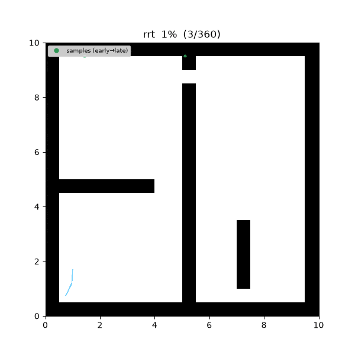
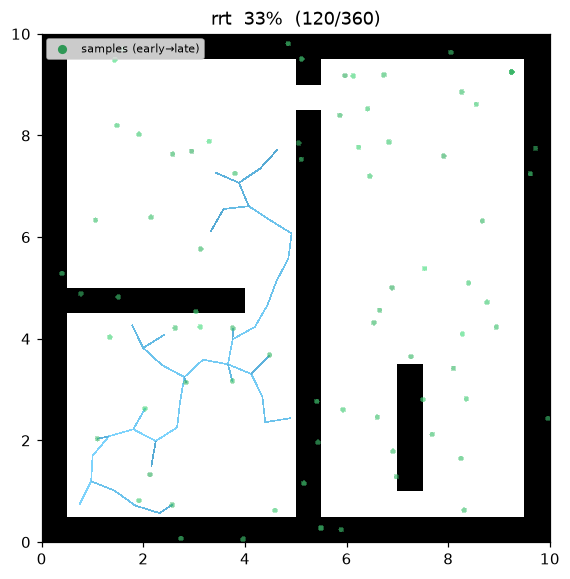
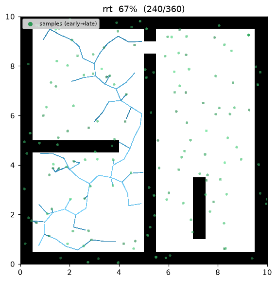
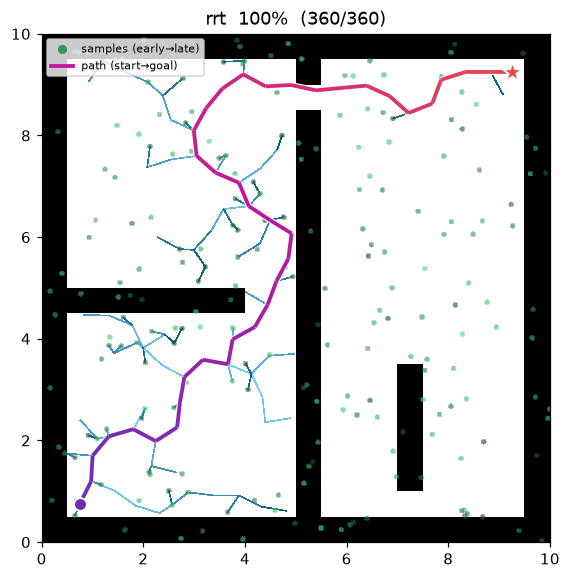
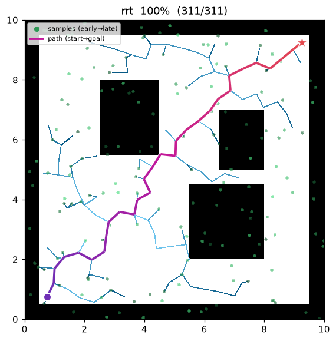
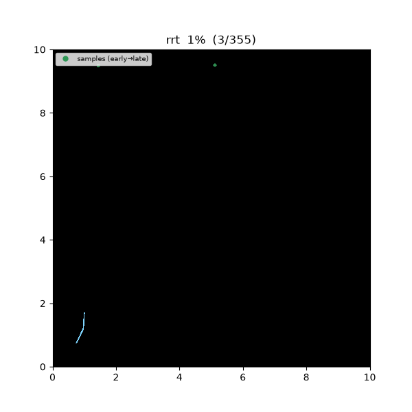
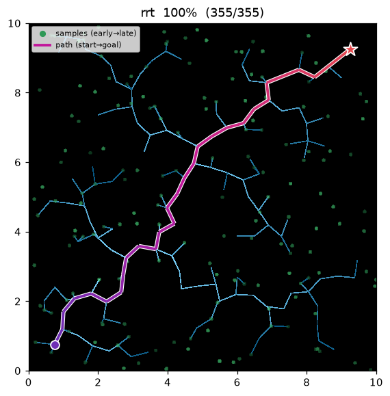
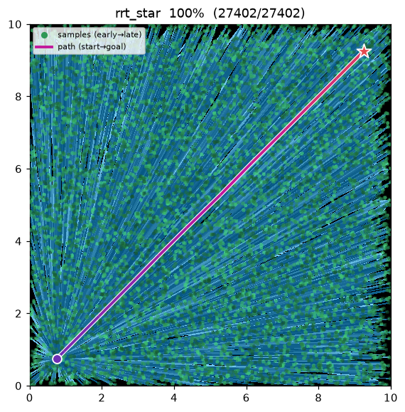

RRT — Rapidly-exploring Random Tree¶
| 항목 | 내용 |
|---|---|
| 분류 | sampling-based, single-query |
| 요구 capability | SamplingSpace |
| 완전성 | probabilistically complete |
| 최적성 | 비최적 — 첫 feasible 경로를 반환 |
| 복잡도 | 반복당 nearest-neighbor 탐색이 지배 (naive O(n)) |
| 원 논문 | LaValle (1998) 1 · LaValle & Kuffner (2001) 2 |
배경¶
RRT1 는 격자화가 비현실적인 고차원 연속 상태 공간을 위해 제안된 sampling 기반 planner 다. 공간을 미리 이산화하는 대신, 무작위 샘플을 향해 트리를 조금씩 뻗으며 자유 공간을 탐색한다. 핵심 성질은 Voronoi bias — 트리에서 가장 가까운 노드가 확장되므로, Voronoi 영역이 큰(= 아직 탐색되지 않은 쪽의) 노드가 선택될 확률이 높아 트리가 미탐색 공간으로 "빠르게" 뻗는다. kinodynamic 제약(비홀로노믹 차량 등)을 steer 함수에 자연스럽게 흡수할 수 있어 로보틱스 전반에서 표준 도구가 되었다2.
동작 원리¶
maze01 — 트리(하늘색)가 자유 공간으로 뻗다가 goal 반경에 닿는 즉시 종료한다.
경로(보라→빨강)가 지그재그인 것이 RRT 의 전형적 특징이다.

탐색 중간 과정 (좌 → 우: 초반 / 중반 / 최종 경로):
 |
 |
 |
open01 최종 결과:

RRT(start, goal):
T ← {start}
for i in 1..max_iterations:
x_rand ← (goal with prob. goal_bias) else sample()
x_near ← nearest(T, x_rand)
x_new ← steer(x_near, x_rand, step_size) # x_near 에서 η 만큼 전진
if is_motion_valid(x_near, x_new):
T.add(x_new, parent = x_near)
if distance(x_new, goal) ≤ goal_tolerance:
return path(start → x_new) + goal
return failure
- goal bias: 확률
goal_bias로 무작위 샘플 대신 goal 자체를 샘플한다. 순수 균등 샘플링은 goal 도달이 느리므로 실용 구현의 표준 기법이다2. - steer: 샘플 방향으로 최대
step_size(η) 만큼만 전진한다. 트리 성장 속도와 장애물 통과 성능의 트레이드오프를 결정한다.
측정치 (Python, seed = 1, trace on):
| map | path cost | samples | tree size | 비고 |
|---|---|---|---|---|
| maze01 | 18.414 | 229 | 132 | 첫 해 즉시 반환 — RRT* 는 13.46 |
| open01 | 14.371 | 177 | 135 | RRT* 는 12.05 |
수백 샘플만에 해를 찾는 대신 경로 품질을 포기한다 — RRT* 대비 19–37% 긴 경로.
재현:
python python/demos/demo_rrt.py \
--map maps/grid/maze01.yaml --scenario maps/scenarios/maze01_s1.yaml \
--params configs/global_planning/rrt.yaml --trace out/rrt.jsonl --seed 1
python tools/viz/replay.py out/rrt.jsonl --gif out/rrt.gif
성질¶
- 완전성: probabilistically complete — 해가 존재하면 반복 수 → ∞ 에서 발견 확률이 1 로 수렴한다2.
유한 반복에서는 실패할 수 있다 (
max_iterations소진). - 최적성: 없음. 첫 feasible 경로를 그대로 반환하며, 실제로 Karaman & Frazzoli 는 RRT 가 최적 경로에 수렴할 확률이 0 임을 증명했다3. 최적성이 필요하면 RRT* 를 쓴다.
- 결과가 확률적: 같은 문제라도 seed 에 따라 경로 모양·비용이 달라진다. 이 저장소는
seed파라미터로 재현성을 고정한다.
확률적 완전성과 비최적성¶
확률적 완전성. clearance \(>0\) 인 feasible 경로가 존재하면, RRT 가 \(n\) 샘플 후에도 이를 찾지 못할 확률은 지수적으로 0 에 수렴한다:
따라서 \(\lim_{n\to\infty}P[\text{성공}]=1\) (LaValle & Kuffner). 유한 반복에서는 실패할 수 있다.
도출 (covering balls). clearance \(\delta>0\) 인 feasible 경로 \(\sigma\) 를 반지름 \(\delta/2\) 의 공 \(B_1,\dots,B_m\) 으로 덮는다 (\(m\approx\lVert\sigma\rVert/(\delta/2)\), 이웃 공 중심 거리 \(\le\delta/2\)). 트리가 \(B_k\) 에 닿아 있을 때 한 반복의 샘플이 \(B_{k+1}\) 에 떨어질 확률은 \(p\ge\mu(B)/\mu(X_{\text{free}})>0\) 로 하한되고, \(\eta\ge\delta/2\) 면 그 샘플로 실제 연결된다. 즉 "\(m\) 개 공을 순서대로 통과"하는 사건은 성공확률 \(p\) 인 시행들의 연쇄라, \(n\) 반복 후 완주 실패확률이 이항 꼬리처럼 \(a\,e^{-bn}\) (\(b\) 는 \(p,m\) 에 의존) 로 지수 감소한다. clearance 가 \(0\) (경로가 장애물에 접함) 이면 \(p\to0\) 이라 이 보장이 깨진다. ∎
Voronoi bias (왜 "rapidly" 인가). 균등 샘플 \(x_{rand}\) 에 대해 트리 노드 \(v\) 가 nearest 로 뽑혀 확장될 확률은 그 Voronoi 셀의 부피에 비례한다:
미탐색 영역에 접한 노드의 Voronoi 셀이 크므로 트리가 그쪽으로 편향 성장한다.
비최적성. \(Y_n^{\text{RRT}}\) 를 \(n\) 반복 후 경로 비용이라 할 때, Karaman & Frazzoli 는
임을 보였다 — 첫 연결 시 정한 부모를 이후 절대 바꾸지 않기 때문에 준최적 비용으로 거의 확실히 수렴한다. 최적성이 필요하면 RRT* 를 쓴다.
반례: RRT 는 최적에 수렴하지 않는다¶
장애물 없는 열린 공간에서 최적 경로는 start→goal 직선(\(c^*=12.02\))이다. 그러나 RRT 는 첫 연결
시 정한 부모를 이후 바꾸지 않으므로, 무작위 샘플을 따라 꺾인 경로를 그대로 반환한다.
rrt_subopt01(20×20 전면 자유)에서:
| RRT | RRT* | 직선 최적 | |
|---|---|---|---|
| path cost | 14.30 | 12.02 | 12.02 |
| 경로 | 지그재그 (준최적) | 거의 직선 (최적) | — |

| RRT — cost 14.30 (지그재그) | RRT* — cost 12.02 (rewire → 최적) |
|---|---|
 |
 |
RRT* 는 같은 공간을 조밀히 덮으며 rewire 로 트리를 곧게 펴 직선 최적에 도달하지만, RRT 는 부모를 고정해 첫 해의 꺾임을 영구히 안고 간다 — 위 \(P[\lim_{n\to\infty}Y_n^{\text{RRT}}=c^*]=0\) 의 시각적 확인이다. RRT*·FMT*·BIT* 가 이를 고친 계열이다.
python python/demos/demo_rrt.py --map maps/grid/rrt_subopt01.yaml \
--scenario maps/scenarios/rrt_subopt01_s1.yaml --params configs/global_planning/rrt.yaml \
--trace out/rrt_ce.jsonl --seed 1 # demo_rrt_star.py 로 바꾸면 12.02 (최적)
파라미터¶
| 이름 | 타입 | 기본값 | 범위 | 설명 |
|---|---|---|---|---|
max_iterations |
int | 5000 | [1, 200000] | 최대 확장 반복 수. 초과 시 실패 반환 |
step_size |
float | 0.5 | [0.01, 100.0] | steer 확장 거리 η (m) |
goal_bias |
float | 0.05 | [0.0, 1.0] | goal 을 직접 sample 할 확률 |
goal_tolerance |
float | 0.3 | [0.0, 100.0] | goal 도달 판정 반경 (m) |
seed |
int | 1 | [0, 2^31−1] | 난수 시드 (재현성) |
방출 trace 이벤트¶
planning_started → (sample_drawn, edge_added)* → path_found → planning_finished
References¶
-
LaValle, S. M. (1998). "Rapidly-exploring random trees: A new tool for path planning." Technical Report TR 98-11, Computer Science Dept., Iowa State University. PDF ↩↩
-
LaValle, S. M., & Kuffner, J. J. (2001). "Randomized kinodynamic planning." The International Journal of Robotics Research, 20(5), 378–400. doi:10.1177/02783640122067453 · PDF ↩↩↩↩
-
Karaman, S., & Frazzoli, E. (2011). "Sampling-based algorithms for optimal motion planning." The International Journal of Robotics Research, 30(7), 846–894. doi:10.1177/0278364911406761 · PDF (arXiv) ↩